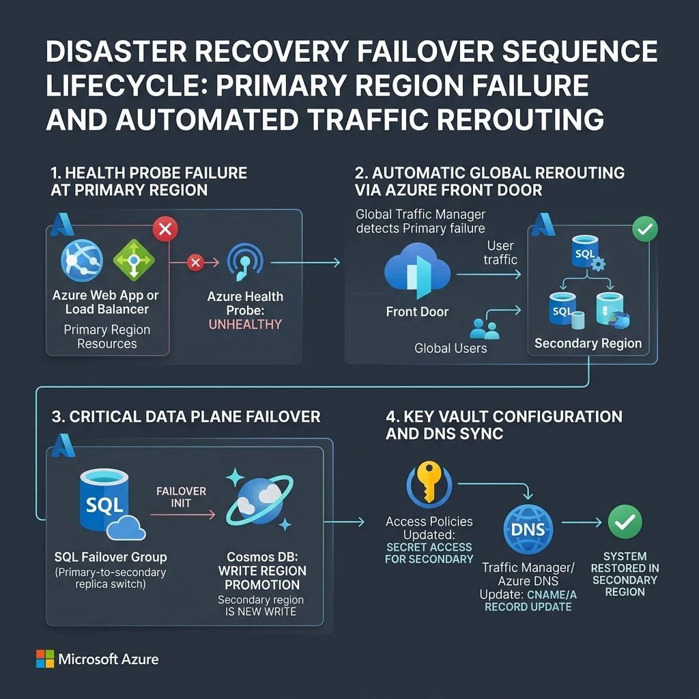

The Enterprise Resiliency Gap
The Boardroom Risk
As of Jan 2025, DORA has turned regional resilience into a legal prerequisite. Zonal-only strategies are now classed as unfunded liabilities by auditors.
The Strategic Audit
Use the interactive DSS Dashboard below to audit your Tier-0 workloads against 1,500+ failure scenarios.
Quantifiable ROI
Reducing RTO from 24h to sub-60m isn't just "uptime"—it's a validated mitigation of critical top-line platform risk.
In the Boardroom, "Best-Effort" is a synonym for "Negligence." If you have to type a single command during a regional failure, you've already lost the battle.
Official Reference Architecture: UK-GCP Resiliency Stack
The following architectural blueprint represents a Tier-0 Mission-Critical Baseline aligned with the Microsoft Cloud Adoption Framework (CAF). It distinguishes between the local High Availability (HA) control plane and the Global Disaster Recovery (DR) data plane.

Key architectural invariants in this "Principal Standard" view:
- Regional Blast Radius Isolation: Clear separation of the Control Plane vs. the Data Plane.
- Read-Scale Resiliency: Using UK West SQL Replicas to offload reporting, maximizing ROI on idle 'DR' secondary resources.
The Zonal Fallacy
I see this trap daily. Architects design for building-level failures (HA) but forget the regional blast radius (DR). I've learned that if a regional control plane goes down, your ZRS storage is just a very resilient tombstone.
The Key Vault Paradox (The Expert Trap)
Hiring Managers focus here: The biggest mistake in Azure DR design is relying on Microsoft-managed Key Vault failover. While nominally "automatic," the platform often waits 4 to 8 hours to initiate the switch during a regional outage.
The Architect's Pivot: To hit a sub-1h RTO, you cannot wait for the platform. You must architect Dual-Vault Deployments with custom application-level secret routing. Syncing secrets to a secondary vault long before the health probes turn red is the only way to surgically bypass the managed failover delay.
The Cost of Inaction: Commercial Impact Matrix
Comparison of Zonal-Only vs. Regional DR Strategy for a global Tier-0 platform.
| Outage Scenario | Zonal-Only Strategy | Regional Strategy (DR) |
|---|---|---|
| Building/Zone Failure | Safe (ZRS/HA) | Safe (ZRS/HA) |
| Regional Blast Radius | 24h+ Site Offline | < 60m Recovery |
| Regulatory Fines (DORA) | Critical Exposure | Compliant/Auditable |
| Direct Revenue Risk | Critical / Unbounded | Mitigated (RTO < 1h) |
Strategic Recovery: The Microsoft Standard Failover Lifecycle
Enterprise recovery is not a singular event—it is a meticulously orchestrated lifecycle comprising detection, automated steering, data plane promotion, and continuous validation. The Strategic Decision Flow below delineates the rigorous command-and-control logic necessary to execute a Tier-0 regional failover efficiently.
.webp)
The Senior Leadership Audit Checklist
Synthesized from official Microsoft 2026 guidelines, these are the five non-negotiables for an audit-ready Azure SQL posture:

Strategic Risk Assessment Matrix
For a Tier-0 global platform, the dichotomy between an isolated zonal architecture and an active cross-region strategy is not merely technical—it is a mandatory Commercial and Legal Safeguard.
| Failure Scenario | Legacy Zonal Architecture | Active Regional Blueprint | Strategic Enterprise Impact |
|---|---|---|---|
| Zonal Resource Failure | Protected (ZRS/HA) | Protected (ZRS/HA) | Baseline HA Achieved |
| Full Regional Outage | Catastrophic Offline (24h+) | Target RTO < 60 Min | Business Continuity Assured |
| Financial Exposure | Unbounded Revenue Loss | Risk Capped via SLA | Fiduciary Duty Fulfilled |
| Regulatory Compliance | Non-Compliant Violation | Audit-Ready Posture | Legal & Board Protection |
The Fiduciary Narrative
Relying on Zone Redundancy is like having a fire-proof safe in a building. If the building is hit by an asteroid (Regional Outage), the safe is still there—but the neighborhood is gone. Disaster Recovery is the Safe House in the next country, with the key already in your hand.
Operationalize your Resiliency Journey
A proactive Regional DR investment costs a fraction of a DORA violation—which carries penalties of up to 2% of your total worldwide annual turnover. Is your architecture ready for the auditor's scrutiny?